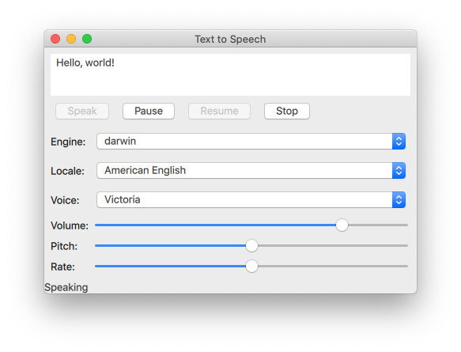
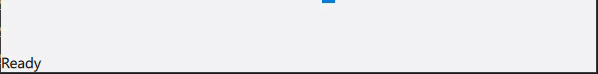

Quick Speech Example
The Quick Speech example reads out user-provided text.

The Quick Speech example demonstrates how the TextToSpeech type can be used in a Qt Quick application to read out text and to control the speech.
The example uses Qt Quick Controls to provide controls for the speech's pitch, volume, and rate. It also lets the user select an engine, a language, and a voice.
Initializing a TextToSpeech
First, we initialize the text to speech object tts:
TextToSpeech {
id: tts
volume: volumeSlider.value
pitch: pitchSlider.value
rate: rateSlider.value
Getting the status

Switch cases are used to update the Label statusLabel in the footer.
onStateChanged: (state) => {
switch (state) {
case TextToSpeech.Ready:
statusLabel.text = qsTr("Ready")
break
case TextToSpeech.Speaking:
statusLabel.text = qsTr("Speaking")
break
case TextToSpeech.Paused:
statusLabel.text = qsTr("Paused...")
break
case TextToSpeech.Error:
statusLabel.text = qsTr("Error!")
break
}
Highlighting words as they are spoken
The TextArea input is used to get the text to input and the onSayingWord signal as the trigger and also to know the position to highlight words as they are spoken.
onSayingWord: (word, id, start, length)=> {
input.select(start, start + length)
The TextArea input is declared here:
ColumnLayout {
anchors.fill: parent
anchors.margins: 8
id: inputForm
TextArea {
id: input
wrapMode: TextEdit.WordWrap
text: qsTr("Hello, world!")
Layout.fillWidth: true
Layout.minimumHeight: implicitHeight
font.pointSize: 24
}
Controlling speech
Button types are arranged with a RowLayout and configured to control the TextToSpeech tts.
The speak button
A Button is created labeled "Speak". It is enabled if tts's state property is either Paused or Ready.
RowLayout {
Button {
text: qsTr("Speak")
enabled: [TextToSpeech.Paused, TextToSpeech.Ready].includes(tts.state)
When the button is clicked, the available voices on the target devices are retrieved, and tts.voice is set to the currently selected voice of voicesComboBox. Then TextToSpeech::say() is called and is passed the text in the inputbox.
onClicked: {
//! [say0]
let voices = tts.availableVoices()
tts.voice = voices[voicesComboBox.currentIndex]
//! [say1]
tts.say(input.text)
}
The pause, resume, and stop buttons
These buttons are similar in implementation to the Speak button:
Button {
text: qsTr("Pause")
enabled: tts.state == TextToSpeech.Speaking
onClicked: tts.pause()
visible: tts.engineCapabilities & TextToSpeech.Capabilities.PauseResume
}
//! [pause]
//! [resume]
Button {
text: qsTr("Resume")
enabled: tts.state == TextToSpeech.Paused
onClicked: tts.resume()
visible: tts.engineCapabilities & TextToSpeech.Capabilities.PauseResume
}
//! [resume]
Button {
text: qsTr("Stop")
enabled: [TextToSpeech.Speaking, TextToSpeech.Paused].includes(tts.state)
onClicked: tts.stop()
}
}
Selecting text to speech options
A GridLayout is used to arrange the controls and labels for the selection of engine, locale, voice, volume, pitch, and rate options for text to speech synthesis.
Selecting engine, locale, and voice
A group of ComboBox components are used for selecting these parameters.
For the engine selection ComboBox, tts.availableEngines() is used as the model.
The onActivated triggers assigning tts.engine the current text at the ComboBoxes current index.
Text {
text: qsTr("Engine:")
}
ComboBox {
id: enginesComboBox
Layout.fillWidth: true
model: tts.availableEngines()
onActivated: {
tts.engine = textAt(currentIndex)
updateLocales()
updateVoices()
The last two lines in the above code snippet show that the available locales and voices are updated at this point as well, as they are dependent on the selected engine. Those functions are covered in a following section.
The localesComboBox is implemented the same way as engineComboBox, but without updating the available engines.
}
}
Text {
text: qsTr("Locale:")
}
ComboBox {
id: localesComboBox
Layout.fillWidth: true
onActivated: {
let locales = tts.availableLocales()
tts.locale = locales[currentIndex]
updateVoices()
}
}
Text {
text: qsTr("Voice:")
}
ComboBox {
id: voicesComboBox
Layout.fillWidth: true
}
Selecting volume, pitch, and rate
These controls are implemented with Sliders as follows:
Text {
text: qsTr("Volume:")
}
Slider {
id: volumeSlider
from: 0
to: 1.0
stepSize: 0.2
value: 0.8
Layout.fillWidth: true
}
Text {
text: qsTr("Pitch:")
}
Slider {
id: pitchSlider
from: -1.0
to: 1.0
stepSize: 0.5
value: 0
Layout.fillWidth: true
}
Text {
text: qsTr("Rate:")
}
Slider {
id: rateSlider
from: -1.0
to: 1.0
stepSize: 0.5
value: 0
Layout.fillWidth: true
}
}
}
Updating available options
By using the Component.onCompleted signal, the following is done once the root ApplicationWindow has been instantiated.
- The
enginesComboBoxindex is set to the currently set engine oftts. - The available locales and voices are updated.
- The current state of
ttsis signaled.
Component.onCompleted: {
enginesComboBox.currentIndex = tts.availableEngines().indexOf(tts.engine)
updateLocales()
updateVoices()
tts.onStateChanged(tts.state)
Used throughout the application, the updateLocales() and updateVoice() functions are implemented as follows:
}
function updateLocales() {
let allLocales = tts.availableLocales().map((locale) => locale.nativeLanguageName)
let currentLocaleIndex = allLocales.indexOf(tts.locale.nativeLanguageName)
localesComboBox.model = allLocales
localesComboBox.currentIndex = currentLocaleIndex
}
function updateVoices() {
voicesComboBox.model = tts.availableVoices().map((voice) => voice.name)
let indexOfVoice = tts.availableVoices().indexOf(tts.voice)
voicesComboBox.currentIndex = indexOfVoice
Running the Example
To run the example from Qt Creator, open the Welcome mode and select the example from Examples. For more information, visit Building and Running an Example.